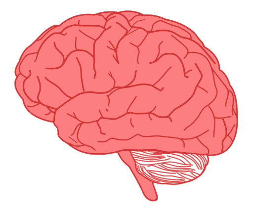
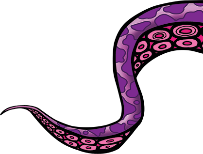

Complex theories, complex brainwaves
Part of what makes this problem so difficult to understand is that science emphasizes objective observation,
and consciousness is inherently subjective. We can’t understand exactly what another person’s consciousness is like,
because we would have to experience it through the lens of our own consciousness. The subjective nature of consciousness
made it a taboo topic in the sciences well into the 20th century, even though philosophers have been exploring what it means to
be conscious for ages. Only in the past few decades have scientists come to regard consciousness as a legitimate area of study.
Today, conventional consciousness research in its simplest form involves measuring brainwaves. Iulia Comsa, a researcher at
Google who has a Ph.D. in the neuroscience of consciousness, worked at the Cambridge Consciousness and Cognition Lab, where she
studied how people lose and recover consciousness. The lab examined the process of falling asleep and the moment people lose
consciousness or stop responding to stimuli, as well as the brain activity of patients in comas or with traumatic brain injuries.
There are different levels of consciousness, which correspond with the presence of certain frequency brainwaves, Comsa says.
Higher frequency brainwaves correspond to higher levels of consciousness and vice versa.
“When you see more complexity in someone's brain, then they're more aware of what's going on,” she says.
Therefore, measuring the complexity of brainwaves can give scientists a window into how aware a person is.
In one study at the Consciousness and Cognition Lab, participants went under sedation and were asked to press a button in
response to a sound. “What I found in the group of people going under anesthesia was that complexity predicted their responsiveness
during a task that they were doing,” Comsa says.
The same measurement of complexity has also helped researchers predict recovery in unresponsive coma patients.
“From the outside you can't see that there's something going on inside their head,” Comsa says.
“But actually if you look at their brain networks, you can see that there is something there. It's starting to look normal,
even if they're not able to express it.”
This research has revealed new neurological aspects of consciousness and has great medical significance.
However, less conventional explorations of consciousness examine brains that are quite different from our human ones.

Changing our minds with other minds
It might seem unlikely that an invertebrate – nevermind one as alien as the octopus – could teach us something about what
it means to have conscious experience. However, it is precisely the difference between this marine animal and humans that
makes the similarities all the more striking. Octavia and the rest of her eight-armed kind can form emotional bonds,
navigate using landmarks and all sorts of other high-level behaviors we associate with human consciousness.
But the octopus does it all with a brain completely unlike that of human beings.
Octopuses have a small central brain and two optic lobes located in their heads,
but the majority of their neurons are in their eight arms.
“There was this notion that the structure of the nervous system and the structure of conscious experience are parallel,”
says Sidney Diamante, a philosophy postdoctoral fellow at the Zukunftskolleg-Universität Konstanz in Germany who has
studied the intersection of octopuses and the nature of cognition for several years.
“For the longest time, it's been assumed that you need to have a certain kind of nervous system and
you need to have a certain behavioral repertoire for consciousness to be attributed.”
That octopuses are able to display many of the same traits and behaviors as humans with an incredibly different nervous
system means we need to rethink a lot of the assumptions that we have about the mind, Diamante says, including what we currently
believe about human consciousness.
“Invertebrates are the first critters people will say don't have consciousness,” Montgomery says,
simply because they are so different from humans. “The last time we had a common ancestor, everybody was a tube,” she says.
For Montgomery, that octopuses are likely to be conscious has a much larger implication.
“If invertebrates experience consciousness, that means that our world is way more alive than we have dared to imagine for many
millennia in Western culture,” she says.
It’s a trip
Meanwhile, far from glass tanks and many-armed cephalopods, the soft lighting, couches and background music make the lab at the
Johns Hopkins Center for Psychedelic and Consciousness Research more like your neighbor’s living room than a chemical lab.
It is also the largest center in the world studying psychedelics. The researchers work primarily with psilocybin,
the psychoactive drug colloquially known as mushrooms, to study altered states of consciousness.
“[Psilocybin] changes the way we feel in certain fundamental ways, and so in that sense you know it can provide a way of studying
different mental processes related to thoughts and emotions and perceptions,” says David Yaden, a postdoctoral fellow at the center.
While all psychoactive drugs change these processes to some degree, psychedelics are special, Yaden says.
“Psychedelics seem unique in that they impact mental processes that most drugs don't seem to, like a sense of self or sense of time.”
Yaden doesn’t believe psychedelics research in its current form can reveal new knowledge about the nature of consciousness or which
theory of consciousness is correct. However, he thinks the unique effects of psychedelics can be a way to explore the bounds of
consciousness.
“Psychedelics represent a larger shift than most psychoactive substances, where our perception can change much more dramatically,”
Yaden says. These changes can be studied scientifically by correlating what participants say is changing in their awareness with
changes in their brains and bodies, in order to track the biological connections to altered states of consciousness.
Yaden is optimistic for the future of psychedelics research. Already, researchers at the center and elsewhere have made progress
in the science of moods and emotions with the use of psychedelics as a treatment for depression. “[The science of emotions] was
something that people thought was too big to study,” Yaden says. “So I think something similar might happen with altered states
of consciousness, where better and better measures are developed and we get a clearer and clearer idea of what we want to call
an altered state of consciousness.”
A novel topic
Even with the help of a psychedelic trip, we can’t get inside someone else’s head and experience their world.
Luckily, Jonathan Kramnick has the next best thing. “There's a kind of natural affinity between literary writing,
which is an experiment in rendering consciousness, and some of the deepest realms of consciousness,” says Kramnick,
a literature professor at Yale University specializing in 18th century literature. Kramnick is curious about what a
literary perspective can contribute to the scientific and philosophical questions of consciousness.
Literature is more than an outlet for philosophizing authors to assert their ideas and theories of consciousness,
it has also provided a place for them to experiment creatively with what it means to be conscious, Kramnick says.
He believes that these depictions of consciousness can be a window into a deeper understanding of the nature of consciousness itself.
“Literature is in some ways, the place to go if you're interested in the exploration of phenomenal consciousness – what it means
to have an experience, what it means to be a conscious human or a conscious rabbit or cat,” Kramnick says.
Not only can literature such as Virginia Woolf’s stream of consciousness novel To the Lighthouse illuminate aspects of
human consciousness, Kramnick says, such works can also help us understand nonhuman consciousness. In Woolf’s Flush,
for example, she writes from the perspective of a dog, imagining how a dog experiences the world with its smell-driven senses.
Similarly, Wallace Stevens imagines the experience of a rabbit in his poem “A Rabbit as the King of Ghosts.”
For Kramnick, literature adds a creative means of investigating consciousness.
“In a way, poetry is about as good as you can get, because it's about experimental use of language – making the attempt to
imagine or to think through or to depict a nonhuman point of view,” he says.
The AI takeover
Another attempt to find a solution to the problem of consciousness is less Virginia Woolf and more I, Robot. Greg Davis,
a sixth-year Ph.D. student in computer science at the University of Maryland, is working to find the core properties of
processes that produce consciousness by using artificial intelligence.
The properties Davis is trying to find are called the computational correlates of consciousness.
In neuroscience and cognitive science, experts talk about neurobiological correlates of consciousness – the mechanisms in
the brain that together create consciousness. The computational correlates of consciousness are information processing mechanisms
in a computer model that parallel their biological counterparts in the human brain, such as the processes of creating and recalling
short-term memory.
“We can come up with these correlates, we can build models of that and we can examine their behavior,
which in some ways makes the problem scientific, because we can do experimentation to collect data and do analysis,
whereas consciousness is classically a difficult thing to study scientifically,” Davis says.
The scientists build an AI model with the computational correlates believed to be necessary for consciousness.
Then, they have that model and a model that doesn’t have those properties perform a task believed to require consciousness
and compare the models’ performances. This comparison allows the researchers to find out if those correlates are necessary to
perform the task.
Not only does making computer models allow the scientists to sidestep many of the technical and ethical challenges involved in
studying consciousness in living beings, it also offers more insight and control. “You can destroy parts of the model,” Davis says.
“You can modify the parameters. You can do all sorts of things.
You have access to details in the model that you don’t in a living system.”
Artificial intelligence researchers often sidestep the problem of consciousness, Davis says,
though there is a growing interest in questions surrounding consciousness.
One vein of artificial intelligence research focuses on developmental approaches that create an AI that simulates a
child’s mind and then teaches it. “It's actually very hard to get machines to do anything like what 3- or 4-year-olds,
even 1-year-olds, do,” Davis says. “They have such incredible intellectual capabilities that we overlook because we focus
too much on problems that human beings can't even solve.”
Perspective is everything
Andrew Zuckerman hopes to bring together the more practical applications of consciousness research and combine them with theory in
order to create a better world. Zuckerman, a Harvard University student, is the executive director of Qualia Research Institute (QRI),
a nonprofit research organization that uses mathematics and scientific analysis to study consciousness.
The subjectivity of consciousness isn’t a problem for QRI, which believes that consciousness can be objectively studied and measured,
Zuckerman says. “Your first person experience is only available to you, but even that’s objective in that sense,” he says.
“It is very objective to you: From your perspective there's only one way it’s like to be you in this moment.
So, there is this aspect of objectivity to your experience.”
QRI pursues consciousness research because the organization believes it has the potential to change the way humans live.
“I think that everything we care about is actually just consciousness,” Zuckerman says.
While people might say they care about their family, their career or traveling, Zuckerman believes that these are just
intermediates for consciousness. “When you want the best for your mother or you want the best for your brother or sister,
you want their conscious experience to be good, not filled with pain or suffering,
and to be enjoyable, for them to have meaningful lives,” Zuckerman says.
Zuckerman isn’t the only one who believes that consciousness research is more than a scientific question.
“It forces you morally to deal with the rest of animate creation in a more compassionate way,” Montgomery says.
Diamante goes a step further. “We have to do a lot of rethinking,” she says.
“If octopuses are that intelligent, and it's only recently that we're starting to know about this.
How many other species are there that are a lot more intelligent than we think? Should humans really be eating these animals?”
Already, revelations from consciousness research have suggested that we need to fundamentally change how we see the world,
and there is still much left to discover. No matter the field, consciousness research continues forward.
So put your reading glasses on, or sit down at your keyboard, or go swimming with some invertebrates –
there’s still plenty of work to be done.